About arc42
arc42, the template for documentation of software and system architecture.
Template Version 8.2 EN. (based upon AsciiDoc version), January 2023
Created, maintained and © by Dr. Peter Hruschka, Dr. Gernot Starke and contributors. See https://arc42.org.
1. Introducción y objetivos
La aplicación YOVI tiene como objetivo desarrollar una plataforma web que permita jugar el juego Y y poder ser utilizada tanto por personas como por bots. Es accesible desde la Web y está pensada como base para futuras ampliaciones, como nuevas variantes del juego.
1.1. Resumen de requisitos
-
Implementar la versión clásica del juego Y con tamaño de tablero variable.
-
El juego contra el ordenador deberá de implementar más de una estrategia que el usuario podrá elegir.
-
Los usuarios podrán registrarse en el sistema.
-
Los usuarios registrados podrán consultar el histórico de sus partidas.
-
La aplicación tendrá una API que permita a los bots interactuar con ella.
1.2. Objetivos de calidad
The top three (max five) quality goals for the architecture whose fulfillment is of highest importance to the major stakeholders. We really mean quality goals for the architecture. Don’t confuse them with project goals. They are not necessarily identical.
Consider this overview of potential topics (based upon the ISO 25010 standard):

You should know the quality goals of your most important stakeholders, since they will influence fundamental architectural decisions. Make sure to be very concrete about these qualities, avoid buzzwords. If you as an architect do not know how the quality of your work will be judged…
A table with quality goals and concrete scenarios, ordered by priorities
| Prioridad | Objetivos de calidad | Escenarios |
|---|---|---|
1 |
Exactitud |
El motor del juego debe validar movimientos y detectar condiciones de victoria con precisión absoluta según las reglas del juego Y. |
2 |
Mantenibilidad |
Arquitectura modular con separación clara entre los diferentes módulos. Código siguiendo principios de diseño y convenciones estándar de cada lenguaje. Documentación arquitectónica completa. Diseño extensible que facilite añadir nuevas variantes del juego sin modificar código existente. |
3 |
Usabilidad |
La aplicación debe ser intuitiva y fácil de usar para usuarios nuevos y experimentados. |
4 |
Robustez |
El sistema debe manejar correctamente errores de comunicación entre módulos web y Rust, entradas inválidas de usuarios, y situaciones excepcionales sin colapsar ni perder datos de partida. |
5 |
Rendimiento |
El sistema debe responder en menos de 3 segundos a las solicitudes de los usuarios. Tambien debe soportar al menos 30 usuarios concurrentes. |
6 |
Seguridad |
La aplicación debe cifrar los datos de los usuarios para proteger su privacidad. El sistema debe poder protegerse de ataques de seguridad como SQL injection. |
7 |
Disponibilidad |
El sistema debe mantenerse operativo y accesible para los usuarios >90% del tiempo, con interrupciones mínimas durante despliegues o actualizaciones y sin pérdida de datos de partidas activas. |
1.3. Stakeholders
| Role/Name | Contacto | Expectativas |
|---|---|---|
Micrati |
micratiGames@example.com |
Producto funcional que cumpla los requisitos del juego Y. Arquitectura modular que facilite futuras extensiones. Código mantenible y documentación clara para mantener la aplicación en el tiempo. |
Jugadores/usuarios finales |
(los usuarios podrán dar feedback sobre la aplicación dentro de la misma y usarán sus correos para identificarse) |
Aplicación web con interfaz intuitiva para jugar al juego Y. Respuestas rápidas del sistema con actualización visual clara e inmediata tras cada movimiento. Reglas claras y feedback visual preciso del estado de la partida. Sistema estable compatible con principales navegadores. Sitio web seguro. |
Profesores de la asignatura |
Aplicación correcta de principios arquitectónicos con separación de módulos y comunicación entre ellos. Documentación clara y código limpio. Trabajo colaborativo y continuo visible en GitHub. Sistema desplegado y funcional. |
|
Desarrolladores |
https://github.com/danigpt https://github.com/claudiaRFS https://github.com/josemzuvi https://github.com/uo288285 https://github.com/uo294254 |
Distribución equilibrada del trabajo con responsabilidades claras entre los diferentes módulos (web TypeScript y motor Rust). Flujo de trabajo colaborativo mediante GitHub con integración continua. Documentación actualizada y útil. |
2. Restricciones de la Arquitectura
2.1. Restricciones Técnicas
| Denominación | Descripción breve |
|---|---|
Frontend |
La aplicación web accesible para los jugadores deberá estar escrita en TypeScript |
Motor del juego / Backend |
El módulo que controla la lógica del juego deberá estar escrito en Rust |
Comunicación entre módulos |
La comunicación entre los módulos anteriormente mencionados debe realizarse mediante JSON |
Formato de datos |
Debe utilizarse la notación YEN de JSON |
Interfaz de la lógica |
El módulo Rust debe disponer de una interfaz de servicio web básica accesible por la aplicación web |
Despliegue |
El juego debe ser desplegado y accesible vía web |
API |
El módulo Rust dispondrá de una API externa que será utilizada por bots para jugar. |
2.2. Restricciones Organizativas
| Denominación | Descripción breve |
|---|---|
Equipo |
El equipo de desarrollo está formado por estudiantes de la asignatura, quienes deben colaborar y gestionar el proyecto conjuntamente, repartiendo roles y trabajo. |
Calendario y Plazos |
El desarrollo del proyecto debe ajustarse a las fechas de entrega establecidas por los profesores. |
Metodología de Trabajo |
Todos los miembros del equipo han de realizar su trabajo de manera semanal e incremental respecto a versiones previas del proyecto. |
Control de Versiones |
Es obligatorio el uso de un sistema de control de versiones (Git) alojado en un repositorio remoto (GitHub) de acceso publico asociado a la organización (Arquisoft). |
2.3. Convenciones del Equipo
| Tipo | Convención |
|---|---|
Idioma |
La documentación y el código fuente deben seguir las pautas de idioma establecidas previamente por el equipo (Documentación en Español y Codigo en Inglés). |
Gestión de ramas |
Se seguirá el flujo "Git Flow" simplificado: desarrollo en |
Revisión de código |
Ningún Pull Request se fusionará sin la aprobación de al menos otro miembro del equipo. |
Consistencia de actas |
Se crearan las actas sobre los temas y decisiones correspondientes a los hablados durante las reuniones siguiendo la plantilla disponible en el repositorio online(Plantilla). |
2.4. Restricciones Políticas y Legales
| Denominación | Descripción breve |
|---|---|
Normas académicas |
El proyecto debe estar en línea con las políticas de la Universidad de Oviedo con respecto a plagio y honestidad académica. |
Privacidad y Protección de Datos |
Los datos de los usuarios registrados (aún siendo en un entorno de pruebas) deben ser protegidos y evitar ser expuestos, acorde a la Ley de Protección de Datos. |
3. Contexto y alcance
3.1. Contexto de negocio

| Elemento | Descripción |
|---|---|
Jugador |
Usuario humano que interactúa con el sistema YOVI a través de la aplicación web para jugar partidas del juego Y. Se autentica en el sistema y realiza movimientos dentro de partidas iniciadas a través de la aplicación. Después de hacer movimientos recibirá el resultado que eso produce en la partida. |
Bot Externo |
Bot automatizado que utiliza un API para conectarse a YOVI para jugar partidas sin necesidad de interacción humana directa. |
YOVI |
Sistema completo de juegos tipo Y. Engloba la aplicación web en TypeScript y el módulo de validación en Rust. Gestiona autenticación de usuarios, lógica de juego, validación de partidas y sugerencias de movimientos. |
3.2. Contexto técnico
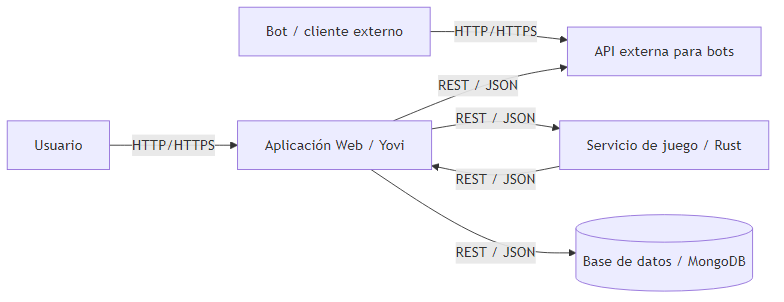
| Nodo | Descripción |
|---|---|
Jugador |
Persona que accede a YOVI desde el navegador para registrarse, iniciar sesión y jugar partidas. |
Aplicación web YOVI |
Es la parte visible del sistema. Muestra la interfaz al jugador, coordina el flujo de partida y conecta con el resto de componentes. |
Punto de acceso para bots |
Entrada específica para programas automáticos. Permite que bots externos jueguen sin usar la interfaz gráfica. |
Bot externo |
Programa automatizado que se conecta a YOVI para enviar jugadas y recibir respuestas del sistema. |
Motor de reglas del juego |
Componente interno que comprueba si una jugada es válida y calcula la respuesta según las reglas de Y. |
Base de datos |
Almacena de forma persistente usuarios, partidas y estadísticas para poder consultarlas en cualquier momento. |
3.2.1. Mapeo de entradas y salidas a canales
| Entrada / Salida | Canal | Descripción |
|---|---|---|
Registro/login |
Jugador → Aplicación web |
El usuario crea cuenta e inicia sesión desde el navegador. |
Consulta de histórico/estadísticas |
Jugador → Aplicación web |
El usuario consulta partidas jugadas, ganadas/perdidas, etc. |
Jugada del usuario |
Jugador → Aplicación web |
El usuario realiza un movimiento desde la UI. |
Play (bot) |
Bot externo → Punto de acceso para bots |
El bot envía |
Siguiente movimiento / validación |
Aplicación web ↔ Motor de reglas |
La app pide validar/calcular la jugada y recibe el resultado para continuar la partida. |
Persistencia |
Aplicación web → Base de datos |
Guardar/leer usuarios, partidas y estadísticas. |
4. Estrategia de solución
4.1. Decisiones tecnológicas
-
Backend:
-
NodeJS + Express: Debido a su popularidad, facilidad de uso y amplia comunidad, lo que facilita el desarrollo rápido y la integración con otras tecnologías.
-
-
Frontend:
-
Vite: Por su velocidad de arranque, y hot-reload instantáneo, permitiendo un desarrollo rápido y eficiente.
-
React: Por su facilidad de uso, modularidad y amplia comunidad y capacidad de crear interfaces de usuario dinámicas y responsivas.
-
-
Base de datos:
-
MongoDB: Debido a su flexibilidad para manejar datos no estructurados, lo que es ideal para almacenar información de usuarios, partidas y estadísticas de juego.
-
-
Github: Lo hemos elegido como plataforma de control de versiones al estar mas familiarizados con él, y su capacidad para gestionar proyectos de software.
-
Azure: Debido a que ya estabamos habituados a su uso, su accesibilidad mediante una IP pública y la facilidad de apertura de puertos.
4.2. Descomposición de alto nivel
La solución se basará en una arquitectura de servicios desacoplados, por un lado contamos con un módulo centrado en el rendimiento que gestionará la lógica del juego, escrito en Rust, e independiente a este trabajaremos con la gestión de usuarios y API en módulos TypeScript, buscando la agilidad de desarrollo web. La cohesión del sistema se hará por medio del estándar YEN sobre protocolos HTTP/JSON. Se tendrá también en cuenta la relevancia del despliegue continuo acompañado de diversos tipos de pruebas que garanticen la calidad y mantenibilidad del código.
4.3. Decisiones para alcanzar objetivos de calidad
En vistas a garantizar los atributos de calidad requeridos en cualquier sistema moderno, se toman las siguientes decisiones, asociadas a metas u objetivos específicos:
-
Mantenibilidad y Desacoplamiento: Se adopta una separación clara de responsabilidades mediante servicios independientes. Al utilizar JSON y la notación YEN como único contrato de comunicación, es posible modificar la interfaz web o el motor de IA de forma aislada sin afectar al otro componente, facilitando la evolución del código.
-
Escalabilidad y Flexibilidad de Datos: La elección de MongoDB permite una escalabilidad horizontal sencilla y una gestión de datos flexible. Esto asegura que el sistema pueda crecer en volumen de usuarios y tipos de juegos sin necesidad de complejas migraciones de esquemas que comprometan la disponibilidad del servicio.
-
Portabilidad y Despliegue: El uso de contenedores Docker garantiza que el sistema se comporte de manera idéntica en el entorno de desarrollo de los estudiantes, en los servidores de la universidad y en la web final, eliminando el problema de "en mi máquina funciona".
-
Documentación: Apostar por una documentación formalizada en Arc42, que refleje con claridad y concisión las decisiones tanto técnicas como organizativas tomadas ayudará a comprender mejor cómo ha sido el proceso de desarrollo, lo que facilita el mantenimiento y uso del proyecto a otros desarrolladores.
4.4. Deciciones organizativas relevantes
Cada tarea o incidencia se registrará como un Issue en GitHub, y se utilizará GitHub Projects para mantener organizada la gestión de las tareas. No habrá una separación estricta entre front-end y back-end, permitiendo que todos los miembros trabajen en ambas áreas. Para cada tarea se creará una rama específica y, una vez finalizada, los cambios se integrarán en la rama develop mediante pull requests. Cuando la funcionalidad esté completamente probada, se fusionará la rama develop con master, garantizando un flujo de desarrollo ordenado y controlado.
Por otro lado, se realizará mínimo una reunión semanal para revisar el avance del proyecto. Sin embargo, adicionalmente, se realizarán las reuniones que sean necesarias para resolver dudas o problemas que puedan surgir durante el desarrollo.
5. Vista de Bloques
5.1. Sistema General (Nivel 1)
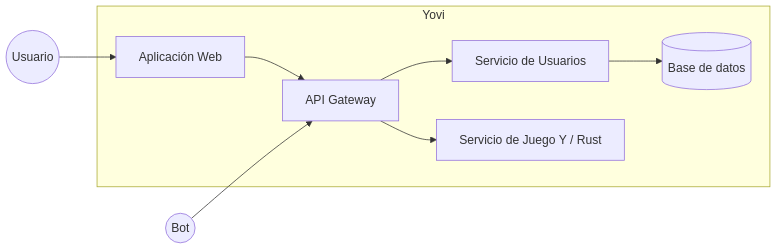
Tabla 1. Bloques de construcción contenidos (Nivel 1)
| Bloque | Descripción |
|---|---|
Stakeholder: Usuario |
Persona que accede a Yovi desde un navegador para registrarse y jugar partidas a través de la interfaz gráfica. |
Stakeholder: Bot |
Cliente externo automatizado que interactúa con el sistema mediante los endpoints expuestos en el API Gateway. |
Aplicación Web |
Aplicación Frontend (SPA desarrollada con React y Vite) que ofrece la interfaz de usuario. Delega toda la comunicación externa al API Gateway. |
API Gateway |
Punto de entrada principal del sistema (Node.js/Express). Expone la API pública, maneja límites de peticiones y enruta el tráfico hacia los servicios correspondientes. |
Servicio de Usuarios |
Gestiona la lógica de negocio relacionada con cuentas de usuario, validación de datos, registro, y autenticación. Interactúa con la base de datos. |
Servicio de Juego (Rust) |
Implementa la lógica central del juego Y. Procesa y valida los movimientos, gestiona el estado de los tableros y calcula las respuestas automatizadas. |
Base de datos |
Sistema de persistencia (MongoDB) utilizado por el Servicio de Usuarios para almacenar información. |
5.2. Nivel 2
5.2.1. Whitebox: Aplicación Web
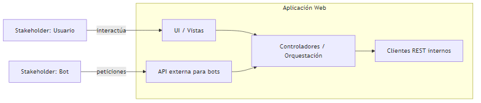
Tabla 2. Bloques de construcción contenidos (Aplicación Web)
| Bloque | Descripción |
|---|---|
Enrutador (React Router) |
Gestiona la navegación en el cliente (SPA) mapeando URLs a sus componentes correspondientes y protegiendo las rutas privadas (ej. redirigiendo al login si no hay sesión activa). |
Vistas y Componentes (React / MUI) |
Conjunto de pantallas y elementos visuales (Login, Registro, Tablero de Juego) desarrollados con React y Material-UI que presentan la interfaz e interceptan las acciones del usuario. |
Gestión de Sesión (SessionContext) |
Estado global de la aplicación en el navegador. Utiliza la Context API de React y el LocalStorage para mantener de forma persistente la información del usuario logueado ( |
Cliente API (Axios / Fetch) |
Capa de integración encargada de construir, ejecutar y gestionar las respuestas de las peticiones HTTP asíncronas dirigidas a la URL pública del API Gateway ( |
5.2.2. Whitebox: Servicio de Juego Y (Rust)
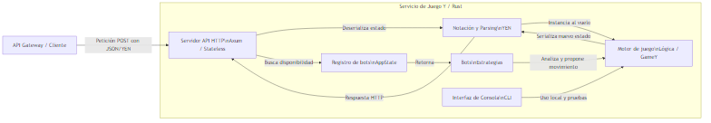
Tabla 3. Bloques de construcción contenidos (Servicio de Juego)
| Bloque | Descripción |
|---|---|
Servidor API HTTP (Axum) |
Punto de entrada de red. Funciona de manera completamente stateless (sin estado de partida). En lugar de almacenar partidas, extrae el estado del tablero que llega en el cuerpo de cada petición HTTP ( |
Notación y Parsing (YEN) |
Capa de traducción. Deserializa el formato de texto compacto YEN recibido en JSON para construir estructuras nativas de Rust ( |
Motor de juego (Lógica) |
Núcleo del sistema. En lugar de persistir, se crea una instancia efímera de |
Registro de bots (AppState) |
El único estado global que mantiene el servidor en memoria. Gestiona y registra qué implementaciones de bots (estrategias) están cargadas y disponibles para ser utilizadas en base al parámetro enviado en la petición. |
Bots |
Módulo que contiene las implementaciones de los oponentes automatizados (ej. |
Interfaz de Consola (CLI) |
Aplicación de línea de comandos incluida en el binario que permite arrancar el programa y jugar localmente sin necesidad del servidor HTTP, interactuando directamente con el motor. |
5.3. Nivel 3
5.3.1. Whitebox: Core del juego
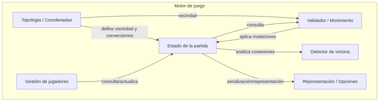
Tabla 4. Bloques de construcción contenidos (Core del juego)
| Bloque | Descripción |
|---|---|
GameY (Motor efímero de partida) |
Estructura central que funciona como una máquina de transición de estado. Su ciclo de vida en el servidor web consta de tres fases: 1) Reconstruirse a partir de una notación YEN simulando las piezas previas. 2) Aplicar un único movimiento entrante validando reglas. 3) Exportarse de nuevo a YEN y destruirse. |
Topología y Coordenadas |
Módulo de cálculo puro ( |
Movimientos y Acciones |
Representación de la intención del turno actual. Define si el jugador o bot intenta colocar una pieza ( |
Algoritmo Union-Find (PlayerSet) |
Estructura de datos y algoritmo que gestiona el grafo de conexiones. Cada vez que GameY reconstruye el tablero o añade una pieza, |
6. Vista en tiempo de ejecución
6.1. Ejecución de movimiento en partida
A continuación se muestra el diagrama de secuencia del procesamiento de un movimiento durante una partida a través de la aplicación web, que representa uno de los flujos principales del sistema.
El diagrama muestra:
-
La captura de entrada: interacción del usuario con el tablero hexagonal
-
El procesamiento en capas: comunicación entre frontend, gateway y servicio GameY
-
La resolución de movimientos: aplicación del movimiento en el juego y ejecución de bot
-
La actualización de estado: actualización del tablero y turnos según resultado

6.2. Ejecución de ranking de jugadores (caso de éxito)
A continuación se muestra el diagrama de secuencia de la obtención y visualización del ranking de jugadores a través de la aplicación web.
El diagrama muestra:
-
El flujo de navegación: acceso a la página de ranking desde la webapp
-
La inicialización de datos: carga del ranking con parámetros de ordenamiento personalizados
-
El procesamiento en capas: comunicación entre frontend, gateway y servicio de usuarios
-
La obtención y transformación de datos: consulta a MongoDB
-
La visualización de resultados: renderizado de la tabla

6.3. Registro de un usuario
En este otro diagrama observamos el proceso de registro de un nuevo usuario en el sistema, donde participan el usuario, la API REST, el middleware de validación y la base de datos.
El proceso es el siguiente:
-
El nuevo usuario envía a la API por el endpoint /createuser sus datos (correo, username, contraseña…)
-
Los datos son validados (formato del correo, nombre de usuario, formato de la contraseña…)
-
Si los datos no son válidos la API devuelve un error con código HTTP 400
-
Si los datos son válidos se comprueba si el usuario no está ya creado en la base de datos
-
En este caso, se hashea la contraseña introducida por el usuario, y se guardan los datos en la BDD, devolviendo un código exitoso 200 y el JSON con los datos del usuario o token de sesión

7. Vista de Despliegue
7.1. Infrastructure Level 1
Diagrama de Despliegue (resumen)
Se utiliza el diagrama de la sección siguiente para representar, a alto nivel, los contenedores Docker, la red interna, la base de datos y la pila de monitoreo. El diagrama muestra cómo los bloques de software (Gamey Server, Users Service, Web App, Gateway) se despliegan en contenedores separados y cómo estos consumen servicios infraestructurales (MongoDB, red Docker, Prometheus, Grafana).
- Motivación
-
Una arquitectura basada en contenedores permite:
-
Aislar responsabilidades (lógica de juego, gestión de usuarios, interfaz web).
-
Facilitar despliegues y escalado independientes por servicio.
-
Simplificar integración de monitoring y gestión de logs.
-
Permitir replicación y orquestación en entornos distintos (desarrollo, staging, producción).
-
| Característica | Descripción |
|---|---|
Escalabilidad |
Escalado horizontal de servicios (réplicas de Gamey y Users) para soportar picos de carga. |
Alta Disponibilidad |
MongoDB configurado con persistencia en volúmenes para garantizar la persistencia de datos. |
Monitoreo y Diagnóstico |
Uso de Prometheus para la recolección de métricas (scrape targets) y Grafana para la visualización de alertas. |
Optimización de Red |
Redes Docker que proporcionan aislamiento y latencias bajas entre contenedores. |
Gestión de Recursos |
Definición de límites de CPU/memoria y controles de estado (readiness/healthchecks) para recuperación automática. |
Control de Despliegue |
Gestión de dependencias declaradas (ej. |
Para entornos: * Desarrollo: despliegue en un único host con contenedores o mediante npm sin replicado y datos locales. * Staging: configuración similar a producción pero con tamaños menores y datos de prueba. * Producción: orquestador con réplicas, balanceadores y políticas de actualización.
7.2. Infraestructura Nivel 2
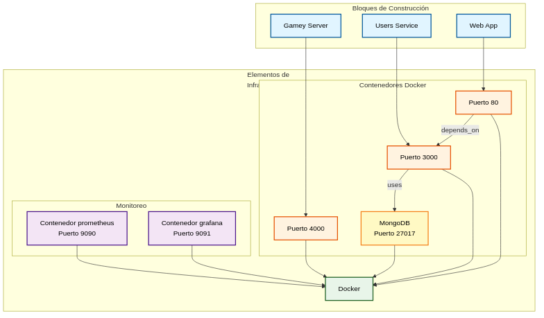
7.2.1. Contenedores
Este grupo representa los servicios principales de la aplicación que se ejecutan dentro del entorno de Docker. Se dividen en tres servicios:
-
Puerto 4000 (Gamey): Este servicio es el núcleo de la aplicación, encargado de gestionar la lógica del juego y las interacciones entre los jugadores.
-
Puerto 3000 (Users): Es el encargado de la gestión de usuarios. Conexión directa a MongoDB.
-
Puerto 80 (WebApp): Es la interfaz de usuario de la aplicación, proporcionando acceso a través de un navegador web. Este servicio se comunica con el Gateway para acceder a los servicios de Gamey y Users.
-
Puerto 8000 (Gateway): Actúa como punto de entrada para las solicitudes HTTP y redirige las peticiones a los microservicios correspondientes.
-
Puerto 27017 (MongoDB): Es la base de datos de la aplicación. Esta interrelacionado con casi todos los conteneder ya que necesita almacenar y proveer de tanto los datos de identificación de los usuarios como de los resultados de sus partidas y sus estadísticas. Cuenta con un volumen persistente para trasladar datos en caso de ser necesario.
7.2.2. Monitoreo
Este grupo incluye los servicios relacionados con el monitoreo y la gestión de la infraestructura. Se compone de dos servicios:
-
Puerto 9090 (Prometheus): Responsable de recopilar métricas y datos de los otros contenedores y del entorno Docker.
-
Puerto 3001 (Grafana): Se utiliza para la visualización de datos conectandose a Prometheus para mostrar las métricas recopiladas en paneles gráficos.
7.2.3. Docker
Actúa como el entorno de ejecución controla la visibilidad y las listas de control de acceso (ACL) para los contenedores de aplicación y monitoreo.
8. Conceptos transversales
This section describes overall, principal regulations and solution ideas that are relevant in multiple parts (= cross-cutting) of your system. Such concepts are often related to multiple building blocks. They can include many different topics, such as
-
models, especially domain models
-
architecture or design patterns
-
rules for using specific technology
-
principal, often technical decisions of an overarching (= cross-cutting) nature
-
implementation rules
Concepts form the basis for conceptual integrity (consistency, homogeneity) of the architecture. Thus, they are an important contribution to achieve inner qualities of your system.
Some of these concepts cannot be assigned to individual building blocks, e.g. security or safety.
The form can be varied:
-
concept papers with any kind of structure
-
cross-cutting model excerpts or scenarios using notations of the architecture views
-
sample implementations, especially for technical concepts
-
reference to typical usage of standard frameworks (e.g. using Hibernate for object/relational mapping)
A potential (but not mandatory) structure for this section could be:
-
Domain concepts
-
User Experience concepts (UX)
-
Safety and security concepts
-
Architecture and design patterns
-
"Under-the-hood"
-
development concepts
-
operational concepts
Note: it might be difficult to assign individual concepts to one specific topic on this list.

See Concepts in the arc42 documentation.
8.1. Modelo de dominio
Los principales conceptos de dominio son:
-
Usuario: jugador registrado en el sistema.
-
Partida: instancia de una partida en entre dos jugadores.
-
Movimiento: acción realizada por un jugador en una casilla válida.
-
Estado de partida: representación del tablero en un instante dado.
-
Estrategia: algoritmo utilizado por el sistema para calcular el siguiente movimiento.
El estado del juego se representa mediante la notación YEN, que permite serializar una partida en formato JSON. Esta notación es utilizada tanto en la comunicación entre servicios como en el API para bots, garantizando coherencia en todo el sistema.
8.2. Arquitectura y patrones de diseño
La arquitectura del sistema sigue una separación clara de responsabilidades entre los distintos bloques principales:
-
Arquitectura basada en servicios: separación entre aplicación web, servicio de usuarios y servicio de juego.
-
Separación por capas: diferenciación entre capa de presentación, lógica de negocio y persistencia.
-
Patrón Strategy: utilizado en el motor del juego para implementar distintas estrategias y niveles de dificultad.
-
Arquitectura cliente-servidor: el frontend actúa como cliente y los servicios backend como servidores.
-
Comunicación REST: intercambio de información mediante HTTP y JSON entre los distintos servicios.
Esta organización favorece la mantenibilidad, escalabilidad y testabilidad del sistema.
8.3. Persistencia de datos
La persistencia del sistema se gestiona mediante MongoDB:
-
Usuarios: almacenamiento de credenciales y datos de perfil.
-
Estadísticas: registro de partidas jugadas, ganadas y perdidas.
-
Historial de partidas: almacenamiento de resultados relevantes.
MongoDB utiliza un modelo orientado a documentos, lo que permite adaptarse fácilmente a cambios en la estructura de datos. La base de datos no se expone directamente al exterior y solo es accesible desde los servicios internos.
8.4. Conceptos de desarrollo
El desarrollo del sistema sigue prácticas modernas de ingeniería de software:
-
Integración continua: uso de GitHub Actions para ejecutar pruebas y análisis de calidad en cada Pull Request.
-
Control de versiones por ramas: uso de ramas master, develop y ramas de funcionalidad.
-
Revisión de código: todas las modificaciones se integran mediante Pull Requests revisadas por el equipo.
-
Testing multinivel: pruebas unitarias y de integración.
-
Uso de docker: uso de contenedores para asegurar entornos consistentes entre desarrollo y producción.
8.5. Seguridad
La seguridad es un aspecto transversal del sistema.
-
Almacenamiento seguro: las contraseñas se almacenan utilizando algoritmos seguros.
-
Validación de entradas: se verifican todos los datos recibidos para evitar ataques.
-
Control de acceso: los usuarios deben autenticarse para acceder a funcionalidades protegidas.
-
Protección frente a fuerza bruta: limitación de intentos de inicio de sesión.
9. Decisiones Arquitectónicas
9.1. Base de Datos
| Sección | Descripción |
|---|---|
Título |
Selección de MongoDB como base de datos para el juego YOVI |
Contexto |
Necesidad de persistencia de datos para el historial de partidas, registro de usuarios y datos internos. Se requiere una solución que soporte esquemas flexibles (tableros variables) y comunicación mediante JSON (notación YEN). |
Decisión |
Aceptar el uso de MongoDB. Se elige por ser una base de datos documental nativa en JSON, su compatibilidad con Docker y la familiaridad previa del equipo con esta tecnología. |
Estado |
Aceptado |
Consecuencias |
Beneficios: Optimización para JSON/YEN, flexibilidad ante cambios en el modelo de datos (tableros), alta velocidad de lectura/escritura para bots y fácil escalabilidad para futuros modos de juego. Desventajas: Gestión de transacciones ACID más compleja (riesgo de inconsistencia en estadísticas) y un elevado consumo de memoria RAM en el despliegue. |
9.2. Estrategia de Control de Versiones
| Sección | Descripción |
|---|---|
Título |
Adopción de modelo Git Flow para la gestión del repositorio en GitHub |
Contexto |
Necesidad de coordinar el desarrollo grupal para evitar conflictos e inconsistencias. Se requiere un flujo que permita separar el código estable del experimental y facilite el trabajo paralelo. |
Decisión |
Implementar una variante de Git Flow. Se utilizarán dos ramas persistentes (main para entregas estables y develop para integración) junto a ramas temporales (feature) de ciclo de vida corto para tareas específicas. |
Estado |
Aceptado |
Consecuencias |
Beneficios: Protección del entorno de producción, aislamiento de errores en ramas experimentales y facilitación del desarrollo paralelo (ej. lógica en Rust y corrección de bugs simultáneos). Desventajas: Historial menos lineal debido a múltiples bifurcaciones y mayor complejidad potencial al resolver conflictos en integraciones semanales. |
9.3. Centralización de Endpoints
| Sección | Descripción |
|---|---|
Título |
Implementación de un API Gateway para la centralización de endpoints |
Contexto |
El esqueleto proporcionado inicialmente presentaba una estructura dispersa. Para gestionar las peticiones de los clientes (web, bots) hacia los diferentes módulos de la aplicación, es necesario un punto de entrada único que simplifique la comunicación y la seguridad. |
Decisión |
Implementar un API Gateway. Se centralizan todos los endpoints de la aplicación en un único punto de acceso para actuar como intermediario hacia los servicios internos. |
Estado |
Aceptado |
Consecuencias |
Beneficios: - Abstracción y simplificación: Los servicios internos son transparentes al cliente; el gateway redirige cada petición al servicio oportuno. - Seguridad centralizada: Permite gestionar la autenticación, el filtrado de datos y el control de tráfico en un solo punto. Desventajas: -Punto único de fallo: Si el gateway falla, se interrumpe toda la comunicación externa con el juego. -Latencia añadida: La inclusión de esta capa puede incrementar sutilmente el tiempo de respuesta. |
9.4. Plataforma de Despliegue
| Sección | Descripción |
|---|---|
Título |
Selección de Microsoft Azure como plataforma de despliegue |
Contexto |
El sistema necesita una integración rápida de los servicios y reducir el tiempo de puesta en producción. |
Decisión |
Aceptar el uso de Microsoft Azure. Se elige como plataforma para desplegar la aplicación por su facilidad de uso y adecuación a las necesidades del proyecto. |
Estado |
Aceptado |
Consecuencias |
Beneficios: Familiaridad del equipo con la plataforma, lo que reduce la curva de aprendizaje, y facilidad para realizar despliegues continuos. Desventajas: Coste asociado al uso de la plataforma, requiriendo control del gasto pese al saldo proporcionado por la universidad. |
9.5. Arquitectura Distribuida en Subsistemas
| Sección | Descripción |
|---|---|
Título |
Selección de arquitectura distribuida para el sistema YOVI |
Contexto |
El sistema YOVI debe implementar una aplicación web para jugar al juego Y, separandose backend y frontend. Ambos módulos deben comunicarse mediante mensajes JSON en notación YEN, lo que requiere decidir entre una arquitectura monolítica o distribuida. |
Decisión |
Adoptar una arquitectura distribuida basada en subsistemas independientes. Se separa el sistema en un servicio principal (aplicación web y API en TypeScript) y un servicio de lógica de juego en Rust, comunicados mediante API REST y mensajes JSON (YEN). |
Estado |
Aceptado |
Consecuencias |
Beneficios: Separación clara de responsabilidades, uso de tecnologías óptimas para cada componente, mayor mantenibilidad y modularidad, escalabilidad independiente de los subsistemas y posibilidad de reutilizar el motor de juego en otros clientes. Desventajas: Mayor complejidad en la comunicación entre servicios, necesidad de gestionar latencia y fallos de red, mayor esfuerzo en despliegue y configuración, y necesidad de definir contratos de comunicación claros y estables. |
9.6. Contenerización y Despliegue
| Sección | Descripción |
|---|---|
Título |
Selección de Docker como solución de despliegue de servicios |
Contexto |
El sistema requiere una forma sencilla y automatizable de desplegar los servicios. Además, es importante garantizar una recuperación rápida ante fallos del sistema. |
Decisión |
Aceptar el uso de Docker. Se elige como tecnología de despliegue para contenerizar los servicios y facilitar su ejecución, gestión y recuperación. |
Estado |
Aceptado |
Consecuencias |
Beneficios: Recuperación rápida ante fallos críticos mediante el reinicio de contenedores desde imágenes limpias, aislamiento entre servicios evitando conflictos de dependencias y facilidad de automatización del despliegue. Desventajas: Curva de aprendizaje inicial para el equipo, al requerir conocimientos sobre conceptos y herramientas no trabajados previamente. |
9.7. Documentación de API en Gateway
| Sección | Descripción |
|---|---|
Título |
Centralización de la documentación de la API REST mediante Swagger/OpenAPI en el gateway |
Contexto |
El sistema YOVI está compuesto por varios subsistemas distribuidos que se comunican mediante API REST. Es necesario que la API pública sea clara, consistente, fácil de validar y accesible sin depender del código fuente. Además, se debe decidir si la documentación reside en cada servicio o se centraliza en el gateway como punto único de entrada. |
Decisión |
Adoptar Swagger/OpenAPI en el gateway como documentación oficial de la API. Se centraliza la documentación en este subsistema, estableciendo un único punto de verdad accesible para frontend y consumidores externos, incluyendo rutas, parámetros, cuerpos de petición, respuestas, códigos de estado y ejemplos. |
Estado |
Aceptado |
Consecuencias |
Beneficios: Existencia de un único punto de verdad para la API pública, evitando duplicidad de documentación, abstracción de la complejidad interna para consumidores externos, mejora en la integración entre subsistemas, reducción de ambigüedades y mayor mantenibilidad. Además, facilita las pruebas de endpoints mediante herramientas compatibles con Swagger/OpenAPI. Desventajas: Necesidad de mantener la documentación sincronizada con la implementación, esfuerzo adicional en cada cambio de endpoint, dependencia del gateway como punto actualizado y posible ocultación de detalles internos si no se complementa con documentación técnica adicional. |
9.8. Arquitectura del Frontend
| Sección | Descripción |
|---|---|
Título |
Uso de React con arquitectura basada en componentes para el frontend |
Contexto |
El sistema YOVI requiere una interfaz web moderna para funcionalidades como autenticación, configuración de partidas y visualización del tablero. Es necesario un enfoque que permita construir interfaces reutilizables, mantenibles, escalables y bien integradas con la API REST, además de ser compatible con TypeScript. Se consideran alternativas como manipulación manual del DOM, enfoques basados en páginas o librerías como React. |
Decisión |
Adoptar React con una arquitectura basada en componentes. La interfaz se organiza en páginas, componentes reutilizables y utilidades compartidas, fomentando la composición y separación de responsabilidades. Se utiliza junto con TypeScript para mejorar la robustez del código. Aunque la implementación actual no es completamente homogénea, se establece este enfoque como estándar a reforzar progresivamente. |
Estado |
Aceptado |
Consecuencias |
Beneficios: Reutilización de componentes de interfaz, mejora de la mantenibilidad, facilidad para evolucionar la aplicación, buena integración con TypeScript, organización clara de vistas y posibilidad de probar componentes de forma aislada. Desventajas: Curva de aprendizaje inicial, mayor complejidad frente a soluciones simples, necesidad de definir buenas prácticas para evitar acoplamientos, riesgo de concentrar demasiada lógica en algunas vistas si no se aplica correctamente y posible dificultad de comprensión si existe una fragmentación excesiva de componentes. |
9.9. Internacionalización
| Sección | Descripción |
|---|---|
Título |
Internacionalización de la aplicación YOVI |
Contexto |
Se busca mejorar la accesibilidad de la aplicación para usuarios de distintas regiones geográficas, permitiendo adaptar el contenido a diferentes idiomas. |
Decisión |
Adoptar la internacionalización (i18n) de la aplicación. Se centralizan los textos en recursos configurables que permiten añadir y gestionar múltiples idiomas de forma sencilla. |
Estado |
Aceptado |
Consecuencias |
Beneficios: Mejora de la mantenibilidad al centralizar los textos de la aplicación, facilitando correcciones y la incorporación de nuevos idiomas. Desventajas: Necesidad de diseñar interfaces flexibles que soporten variaciones en la longitud de textos, lo que puede afectar a la consistencia visual. |
9.10. Autenticación
| Sección | Descripción |
|---|---|
Título |
Uso de autenticación basada en tokens JWT |
Contexto |
El sistema YOVI necesita proteger funcionalidades para usuarios autenticados en una arquitectura con frontend y gateway comunicándose mediante API REST. Se evalúan alternativas como autenticación por sesión, cookies con estado o tokens JWT. |
Decisión |
Adoptar autenticación basada en tokens JWT. Tras el inicio de sesión, el cliente recibe un token que debe incluir en cada petición a recursos protegidos, siendo validado por el gateway antes de conceder acceso. |
Estado |
Aceptado |
Consecuencias |
Beneficios: Encaja con arquitecturas distribuidas, permite autenticar en cada petición, evita dependencia de sesiones en servidor, facilita la protección de endpoints y reduce el estado en el backend. Desventajas: Necesidad de proteger el token en el cliente, riesgo de uso indebido hasta su expiración si se ve comprometido, mayor complejidad en validación y gestión de expiración, y necesidad de definir cuidadosamente la información contenida en el token. |
10. Requisitos de Calidad
10.1. Árbol de Calidad
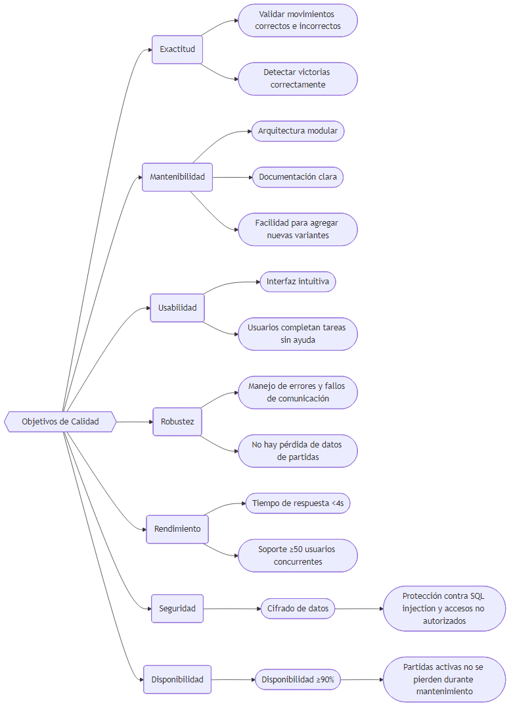
10.2. Escenarios de Calidad
10.2.1. Escenario 1: Exactitud en Movimientos
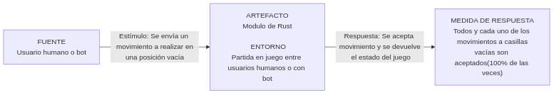
10.2.2. Escenario 2: Exactitud en estado de la partida
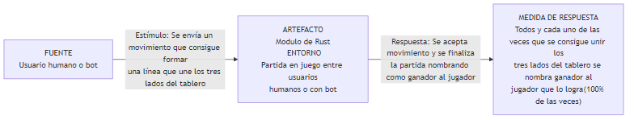
10.2.3. Escenario 3: Usabilidad de la aplicación
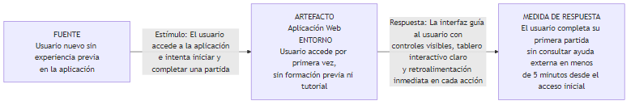
10.2.4. Escenario 4: Rendimiento en tiempos de respuesta
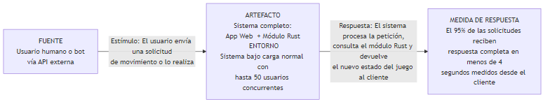
10.2.5. Escenario 5: Protección contra inyecciones SQL
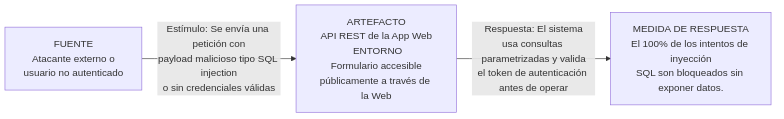
10.2.6. Escenario 6: Protección de rutas
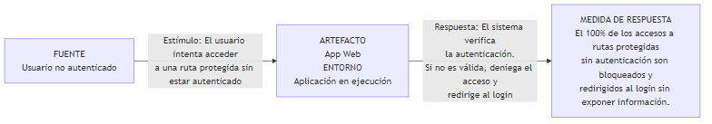
11. Riesgos y Deuda Técnica
En esta sección se recogen los principales riesgos y deudas técnicas identificados durante el desarrollo del proyecto. Se han ordenado por prioridad y se incluye una breve propuesta de mitigación para cada caso.
11.1. Riesgos
| Nombre | Descripción | Prioridad | Mitigación propuesta |
|---|---|---|---|
Falta de tiempo |
El proyecto debe desarrollarse al mismo tiempo que otras asignaturas y entregas, por lo que existe un riesgo real de no llegar a implementar todas las funcionalidades previstas con la calidad deseada. |
Alta |
Priorizar primero las funcionalidades esenciales, trabajar con incrementos pequeños y evitar dedicar demasiado tiempo a mejoras secundarias antes de estabilizar la funcionalidad principal. |
Problemas de coordinación y control de versiones |
Al tratarse de un proyecto en equipo con varios servicios y documentación compartida, una mala coordinación o una resolución incorrecta de conflictos en GitHub puede sobrescribir trabajo, retrasar integraciones o dejar cambios inconsistentes entre módulos. |
Media |
Seguir utilizando issues, pull requests y ramas de corta duración, y revisar cuidadosamente las fusiones antes de integrar cambios en las ramas principales. |
Punto único de fallo en el gateway |
El API Gateway es el punto principal de entrada para todo el tráfico externo. Si falla, la aplicación web y el acceso de bots quedan indisponibles, ya que el despliegue actual no cuenta con réplicas ni mecanismos de tolerancia a fallos. |
Media |
Añadir healthchecks, políticas de reinicio y un despliegue más robusto, y valorar replicación si el entorno de producción crece. |
Experiencia limitada con algunas tecnologías |
Parte del equipo está trabajando por primera vez con tecnologías como React, despliegue con Docker, documentación Arc42 y separación por servicios, lo que puede ralentizar el desarrollo y provocar errores evitables. |
Media |
Compartir conocimiento dentro del equipo, reutilizar ejemplos que ya funcionan en el propio proyecto y documentar las decisiones técnicas principales para reducir el tiempo de aprendizaje. |
11.2. Deuda técnica
| Nombre | Descripción | Prioridad | Mitigación propuesta |
|---|---|---|---|
Inconsistencia de configuración |
Algunas variables de entorno y URLs de servicios siguen convenciones distintas según el módulo o el entorno. Esto hace que el despliegue y el mantenimiento sean más frágiles de lo necesario. |
Media |
Unificar convenciones de nombres, validar la configuración al arrancar y mantener una única referencia para las variables de despliegue. |
12. Glosario
| Term | Definition |
|---|---|
Yen (notación) |
Formato JSON para representar el estado completo de una partida del juego Y en un instante dado,para poder comunicarse con la aplicación. |
API Gateway |
Punto de entrada único del sistema que centraliza todos los endpoints públicos y enruta las peticiones hacia los microservicios internos (servicio de usuarios y servicio de juego). |
SPA (Single Page Application) |
Tipo de aplicación web que carga una única página HTML inicial y actualiza el contenido dinámicamente sin recargar el navegador. |
13. Anexo
13.1. Estrategia de Pruebas
La estrategia de pruebas del sistema combina pruebas unitarias y pruebas end-to-end para validar tanto los módulos individuales como el funcionamiento global de la aplicación. Las pruebas unitarias permiten detectar errores de forma temprana y comprobar la lógica de cada componente de manera aislada. Por su parte, las pruebas end-to-end verifican flujos completos de usuario y aseguran que la integración entre frontend, backend y persistencia funciona correctamente. Con esta combinación se busca aumentar la calidad del sistema y reducir el riesgo de fallos en producción.
13.2. Pruebas Unitarias
Se han realizado pruebas unitarias en los servicios del backend. Con ellas se busca validar la lógica de negocio, el manejo de errores y las funcionalidades de cada servicio.
Para ello, entre otras cosas se ha utilizado:
-
Vitest: un framework de pruebas en JavaScript, empleado para la estructura de los tests.
-
Supertest: librería para simular y realizar peticiones HTTP directamente sobre la aplicación en Node.js, validando las respuestas de los endpoints.
-
MongoDB Memory Server: herramienta que levanta una instancia de base de datos en memoria temporal
13.3. Pruebas end to end (E2E)
Se han realizado pruebas E2E para validar el correcto funcionamiento de la aplicación en su conjunto, desde la perspectiva del usuario final. Estas pruebas se han centrado en el flujo de inicio y registro de sesión y jugar una partida.
13.4. Pruebas de Carga y Rendimiento
Se han realizado pruebas de carga sobre la aplicación desplegada en Azure.
El objetivo de las mismas es comprobar la robustez y resiliencia de la infraestructura que será utilizada por los usuarios reales, simulando un periodo de alta demanda por parte de los mismos, siempre ajustándonos al contexto académico en el que nos encontramos.
13.4.1. Implementación
Se utiliza Gatling para la ejecución de las pruebas de carga. Para ello se crean como recursos un .csv con los usuarios que serán inyectados para probar, y un escenario donde se especificará la forma de inyectarlos y las acciones que realizarán los mismos.
Los tests se han ejecutado desde una máquina local con Java 17 y Maven contra la máquina Azure de despliegue.
Al orquestar las pruebas con Maven, se añaden las dependencias de Gatling y otras necesarias en un archivo pom.xml
13.4.2. Escenario probado
El escenario que se prueba es el flujo que siguen los usuarios al interactuar con la web:
-
Inicio de sesión
-
Se inicia una partida y se hace un movimiento en el tablero
-
Se consulta el historial de partidas del usuario
-
Se cierra sesión
En este escenario se establecen ciertos asertos, serán comentados en el apartado de "Resultados".
Se detalla en el archivo SimpleFlowSimulation.scala.
13.4.3. Carga probada
Se ha planteado una carga que se adapte a las restricciones en materia de seguridad implementadas en el gateway (máximo de 500 peticiones por usuario en un minuto, como prevención ante ataques DDoS).
De este modo: * Se inyectan 5 usuarios en un primer instante. * Se va incrementando de 1 a 3 usuarios por segundo durante los siguientes 30 segundos. * Se inyectan 3 usuarios por segundo durante los últimos 30 segundos.
13.4.4. Resultados
Los resultados han sido registrados en un informe generado por Gatling.
El informe global puede ser consultado aquí: Resultados_test_carga.pdf
En el escenario se definen como asertos/restricciones para considerar el test "aprobado" que:
-
Toda petición se responda en un máximo de 2 segundos
-
El porcentaje de peticiones exitosas sea de al menos, un 60%.
Estos asertos se cumplen de forma holgada, mostrando las estadísticas un 100% de peticiones exitosas, todas ellas con un tiempo de respuesta inferior a 800ms, con una carga máxima de aproximadamente 30 usuarios simultáneos hacia el ecuador de la prueba:
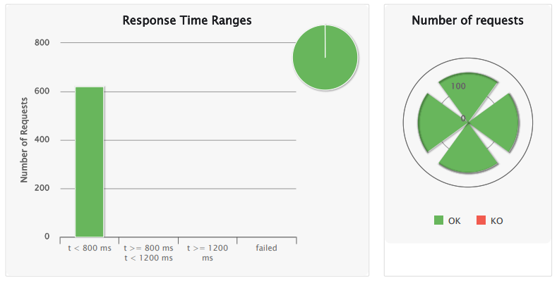
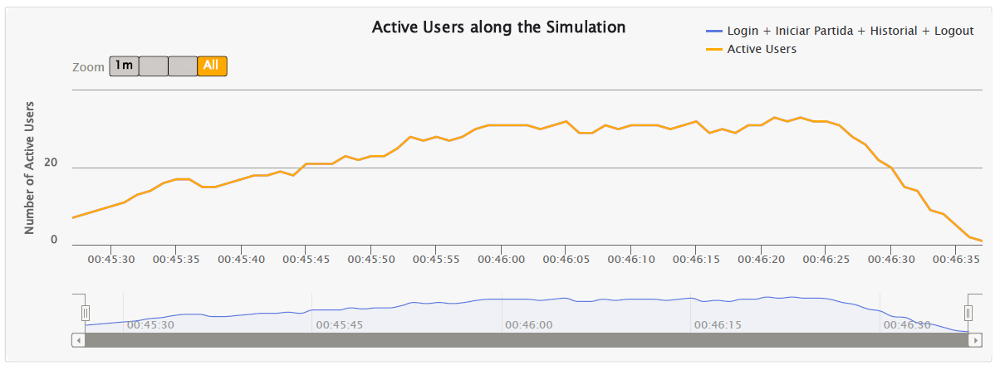
13.5. Pruebas de Usabilidad
Se realizaron pruebas de usabilidad con usuarios de diferentes edades y niveles tecnológicos para evaluar el tiempo que tardaban en completar dos tareas: jugar una partida y consultar el historial.
En la tarea de “jugar una partida”, se observó que los usuarios más jóvenes y con mayor nivel tecnológico completaban la acción más rápidamente (50 segundos), mientras que los usuarios de mayor edad o con menor nivel tecnológico tardan más tiempo (hasta 120 segundos). Esto indicó que la funcionalidad no era igual de intuitiva para todos los perfiles de usuario, especialmente para aquellos menos familiarizados con la tecnología.
En cambio, en la tarea de “consultar el historial”, los tiempos fueron significativamente menores en todos los casos (entre 2 y 12 segundos), lo que sugirió que esta funcionalidad era más clara, accesible y fácil de usar independientemente del perfil del usuario.
A partir de los resultados obtenidos en las pruebas de usabilidad, se realizaron varias mejoras en la aplicación. En primer lugar, modificó el botón de como jugar, ya que, aunque a nosotros nos parecía bastante intuitivo con el icono "?", los usuarios de prueba no identificaban para que servía.
Además, se mejoró la claridad de la interfaz, aumentando el tamaño de letra y mejorando los contrastes para que le resultase más fácil de leer a aquellos usuarios de mayor edad.
13.6. Monitorización
Para la monitorización de la aplicación se han utilizado Prometheus y Grafana, dos herramientas ampliamente usadas en entornos de observabilidad. Prometheus se encarga de recopilar y almacenar métricas relacionadas con el comportamiento del sistema, concretamente información sobre las peticiones que llegan al servicio de users, como el método HTTP y la ruta utilizada.
A partir de estos datos, Grafana permite su visualización mediante dashboards interactivos, facilitando el análisis del estado del sistema en distintos niveles de detalle. Con este enfoque, no solo podemos observar qué está ocurriendo en la aplicación, sino también detectar problemas, analizar tendencias y tomar decisiones basadas en datos reales.
13.6.1. Dashboard “Monitoring 24h”
El dashboard “Monitoring 24h” está diseñado para supervisar el comportamiento durante las últimas 24 horas. Su objetivo principal es ofrecer una visión clara del tráfico, los errores y el rendimiento del sistema.
Incluye un indicador clave que muestra el número total de peticiones recibidas en el último día. Además, presenta una gráfica de tráfico por horas que permite observar la evolución de las peticiones a lo largo del tiempo.
También incorpora un análisis más detallado por endpoint mediante una variable dinámica que permite filtrar por rutas específicas. De esta forma, se puede examinar el comportamiento de endpoints concretos y entender mejor qué partes del sistema reciben más carga.
En cuanto a la estabilidad, el dashboard incluye un panel dedicado a los errores, mostrando el número de respuestas con códigos HTTP 4xx y 5xx por hora. Esto facilita la detección de problemas en el sistema.
Por último, se muestra la latencia media de las peticiones, calculada a partir de las métricas de duración. Este indicador es fundamental para evaluar el rendimiento de la API y detectar posibles degradaciones en los tiempos de respuesta.
13.6.2. Dashboard “Monitoring last 15min”
El dashboard “Monitoring last 15min” tiene como propósito ofrecer una visión rápida y actualizada del rendimiento y la carga del servicio para detectar problemas de forma inmediata.
Incluye un indicador de latencia p95, que representa el tiempo en el que se completan el 95% de las peticiones. Este valor refleja de forma más realista la experiencia de la mayoría de los usuarios, evitando que valores extremos distorsionen la media.
Además, muestra el número de peticiones por segundo, lo que permite entender la carga actual del sistema y detectar rápidamente incrementos o caídas bruscas en el tráfico.
También se incluye una gráfica de la tasa de peticiones a lo largo del tiempo, que permite visualizar su evolución reciente e identificar picos o comportamientos anómalos en periodos cortos.
13.6.3. Conclusión
El uso combinado de ambos dashboards responde a la necesidad de cubrir dos perspectivas complementarias en la monitorización del sistema: una visión histórica y otra en tiempo real.
Por un lado, el dashboard “Monitoring 24h” permite analizar el comportamiento del sistema a lo largo del tiempo, identificando patrones de uso, tendencias de tráfico y posibles problemas recurrentes.
Por otro lado, el dashboard “Monitoring last 15min” está orientado a la inmediatez, proporcionando información en tiempo real sobre la carga y el rendimiento del sistema.
En conjunto, ambos dashboards se complementan para ofrecer una monitorización completa: mientras uno permite entender el comportamiento histórico y analizar tendencias, el otro facilita la detección y reacción inmediata ante incidencias. Esta combinación mejora la capacidad de observación del sistema y permite actuar de forma más eficiente.